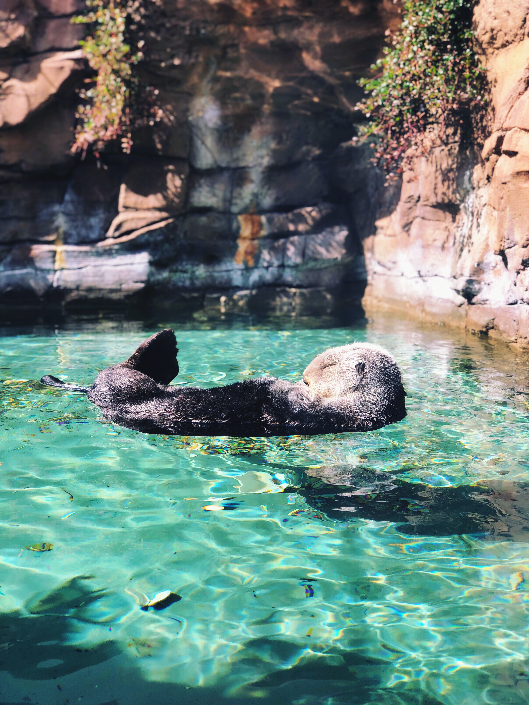
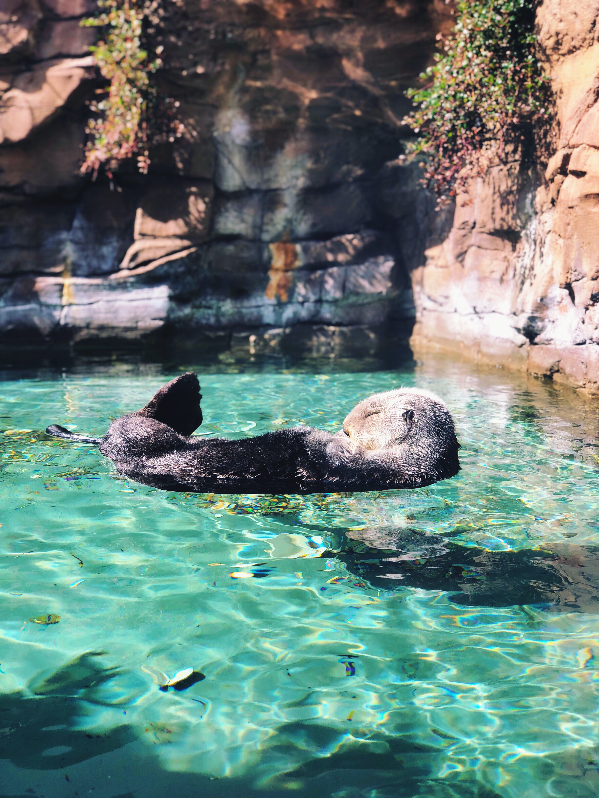

- Seattle Center & the Space Needle
- Chihuly Garden and Glass
- Seattle Aquarium
You cannot not visit this place while in Seattle. This place has entertainment complex, park area with theaters, sports facilities, and restaurants. You'll find many tourists here.
You have to ride to the top of the Space Needle and experience visiting Seattle to a whole new level. Take an elevator to the 360-degree-view Needle Observation Deck to look out over the city, Elliott Bay, and Mt. Rainier.
Chihuly Garden and Glass is a museum located within the space center and a very popular tourist attraction. The museum displays some amazign glass work of the innovative glassblower Dale Chihuly, who is a native of Tacoma. You can enjoy a live demostraation of glass blowing techniques and even buy some of these amazing glass creations.
There are eight galleries around the museum and various glass sculptures all around to check out. Visitors can sit at the Art Plaza and Collections Café and enjoy the glass blowing session or take a stroll around the beautiful garden surrounding the museum.
Seattle Aquarium is located at the downtown waterfront. The Aquarium aims to educcate visitors about the wild importance of the nearby Puget Sound. The museum has a massive 120,000-gallon tank with a 40-foot-wide window. There are also bench seatings where visitors can sit and enjoy the marine wildlife peacefully.
The staff members at the museum are very friendly and offer a lot of insightful information and quick facts about the water species. The tank designs are really pleasing and huge. One can see marine mammals, including different kinds of seals and otters. The seals are super friendly.
 
